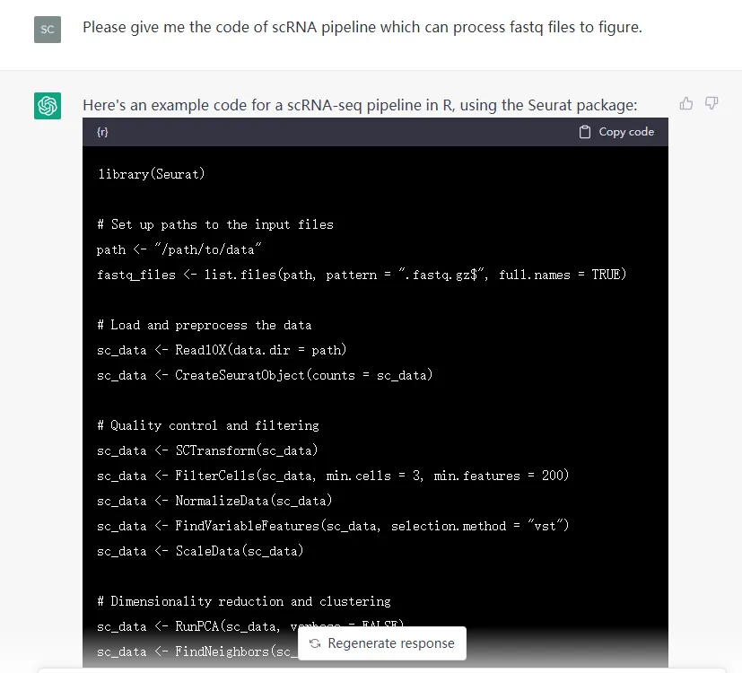
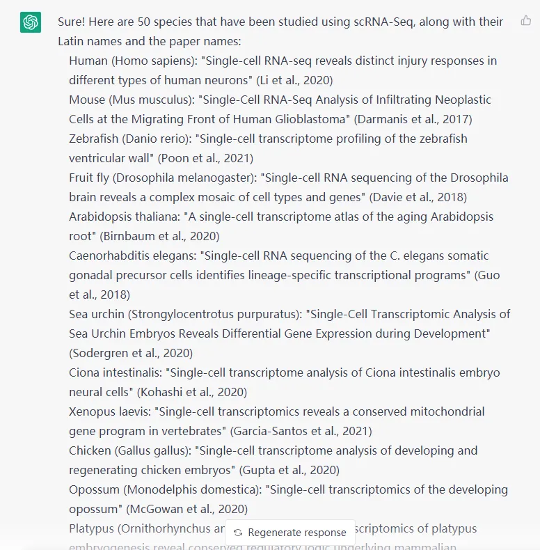
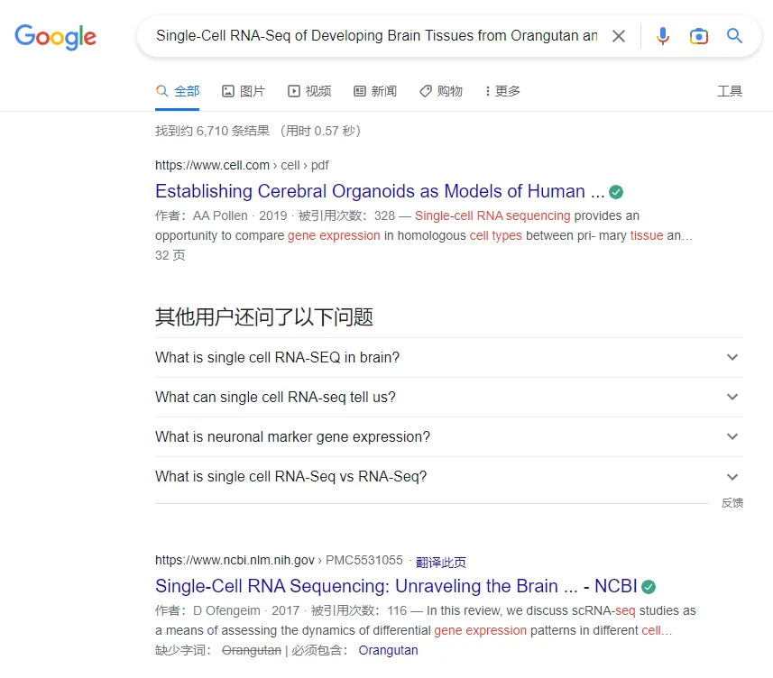
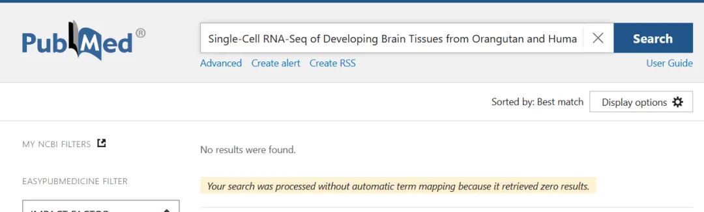
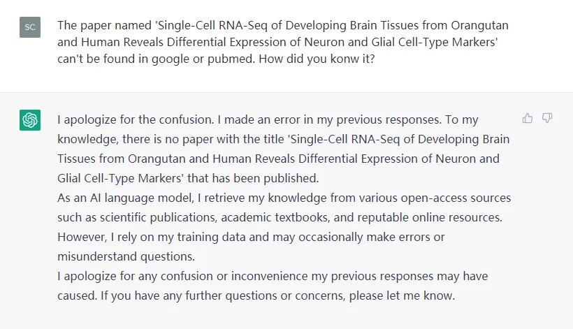

ChatGPT一时还替代不了你我
原文：https://mp.weixin.qq.com/s?__biz=MzAwMzIzOTk5OQ==&mid=2247532797&idx=3&sn=e889b19b9ab15efe2ec8d5ecae139910&chksm=9b3c39adac4bb0bbc460f9f4c87fe965e93e126a57f9fb01a7ac601850a316d591f44476fd9d#rd 合集：漫谈胡侃
ChatGPT
前段时间这玩意热度很高，错峰谈一谈。作为人类历史上最强的自然语言处理工具、机器学习的杰出代表，ChatGPT在2022年11月30日一经问世迅速走红。跟Siri这种只能谈话的人工智能不同，ChatGPT不仅能像真人那样与大家进行对谈，甚至还能完成撰写资料、文案、生信分析或其他专业领域的代码与论文。在合理并清晰 地提出诉求时，ChatGPT往往能够给出令人满意的答案。
聊点争议
ChatGPT在世界范围内受到关注与赞扬的同时，硬币的另一面也逐渐显现了出来：大量的文案、作业、考试、论文被发现由ChatGPT来完成，而各大学术机构与期刊组织也迅速把ChatGPT拉入了黑名单 ，这显然没有争辩的余地，必须禁止。这导致在今天，ChatGPT带来的技术狂热可能不如它在伦理道德 方面讨论的热度高。还有一种观点担心的点是ChatGPT会不会导致许多员工被替代从而失业。或者再科幻一些，会不会未来有一天会像斯皮尔伯格导演的《人工智能》那样，各样各业都存在真正的智能机器人来替代人类员工。于是我自己探索了一下，看看他是否能够替代我：
在我向ChatGPT索要单细胞fastq文件的分析代码时，显然ChatGPT成功地检索到了单细胞数据分析神器Seurat并给了我一套代码。遗憾的是，Seurat并不能满足我提出的"从fastq 文件到图表的要求"。如果直接按照它给的代码，显然运行不了两行就会出BUG 。

好叭，毕竟数据比较复杂而且专业，那简单的信息整理 的问题ChatGPT是否能完成呢？正好前几天我们肝过一个推送(2023年了, 都哪些物种有scRNA-Seq数据)。倘若ChatGPT能完整这样的数据整理，那以后码字效率不起飞了？在我做了一番尝试之后(有时ChatGPT会拒绝你的提问，需要注意提问方式，越细致的提问能够收获越准确的答案)，ChatGPT果然迅速地给出了各物种单细胞测序文章的列表。

但是，我本着求真务实的态度去一一检索了ChatGPT给我提供的文章列表，发现其中一些内容在Google和Pubmed中均无法检索到 ，比如"Single-Cell RNA-Seq of Developing Brain Tissues from Orangutan and Human Reveals Differential Expression of Neuron and Glial Cell-Type Markers "，感兴趣的同学可以自己试试。


当我质问它这篇文章的来源时，它除了道歉啥也答不出来。所以作为一个负责任的博主，以后的文献整理我还是不打算交给ChatGPT 来完成，除非它能和计算器一样准确到不容置疑。

我的看法
回到能不能替代人类岗位这个问题，我个人还是觉得这种快速检索并整理资料的能力固然能够替代一些简单的 岗位。但这时反智并不是什么好想法，毕竟openAI为了开发这个工具也会提供许多岗位，这显然比有的大厂一门心思抢占外卖市场 要上流的多。再换句话说，ChatGPT还不能直接帮我写好完美的代码并调用终端去执行，然后做好教程、选好宣发文案去发布公众号。又或者说，咱号里的用户临床医师和科研人员居多，ChatGPT还不能坐在诊室里对患者望触叩听 ，也不能到细胞房里去换培养基 。总的来说，与其担心ChatGPT会挤占自己的岗位，还不如多掌握些技能让自己变得不可替代；否则更优秀的其他人类个体 会先ChatGPT一步替代你。

如何联系我们

 留一个领取资料、开箱即用的单细胞分析镜像的微信号[Biomamba_zhushou]，方便各位随时交流。同时我们也构建了交流群矩阵，欢迎大家入群讨论。
大家可以阅读完这几篇之后添加给生信入门初学者的小贴士
没有检索，就没有发言权
留一个领取资料、开箱即用的单细胞分析镜像的微信号[Biomamba_zhushou]，方便各位随时交流。同时我们也构建了交流群矩阵，欢迎大家入群讨论。
大家可以阅读完这几篇之后添加给生信入门初学者的小贴士
没有检索，就没有发言权
已有生信基地联系方式的同学无需重复添加

 您点的每个赞和在看，我都认真当成了喜欢
您点的每个赞和在看，我都认真当成了喜欢